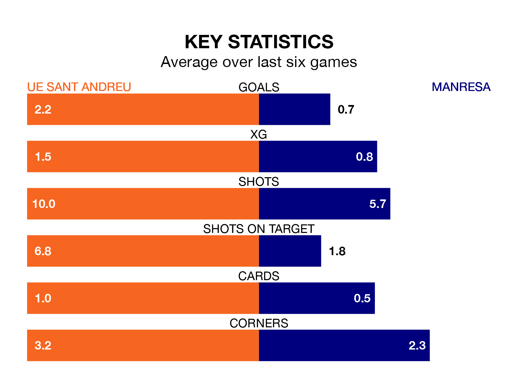

Relegation candidates Manresa face a challenge away against high-flying UE Sant Andreu at Camp Municipal Narcís Sala on Sunday.
Manresa are 16th in the Segunda División RFEF Group 3 table, and have picked up five wins and seven draws in their 25 games to date.
UE Sant Andreu, meanwhile, are fourth in the standings with 44 points, having won 13 and drawn five, and are seven points behind table-toppers CF Badalona.
UE Sant Andreu are in reasonable form in the Segunda División RFEF Group 3, with four wins and two losses from their last six games.
With no wins and six losses over that period, Manresa's form is much worse – they have taken no points from 18, compared to the home team's 12.
With 43 goals in 25 games so far this season, UE Sant Andreu are the league's highest scorers with 1.7 goals per game. And they are conceding fewer than average, letting in 27 goals at a rate of 1.1 per game.
The visitors, meanwhile, are below average scorers, with 0.8 goals per game, compared to a league average of 1.2. They have conceded 1.2 goals per game.
In the last 10 years, UE Sant Andreu and Manresa have played each other on six occasions. They won one each, and they drew four times.
On average, UE Sant Andreu scored 0.7 goals and Manresa 1.0 in those matches.
Their last meeting was on October 28, when they played out a 1-1 draw.
UE Sant Andreu's last match was on March 3, a 2-0 win against Atlético Saguntino, with Antoni Paredes García and Sergio Castillo Larraz getting the goals for UE Sant Andreu.
Manresa lost 2-1 against Torrent last time out, also on March 3, with Omar Ouhdadi on the scoresheet.
Updated: 09:34 (UTC), 08/03/24